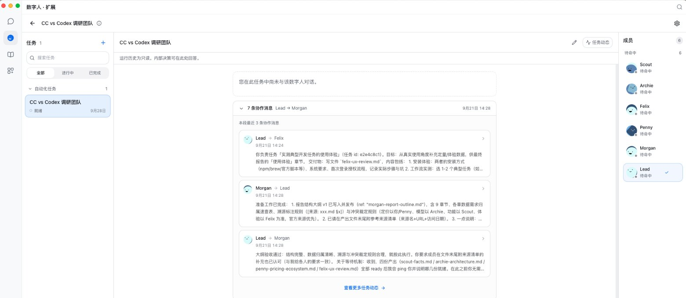
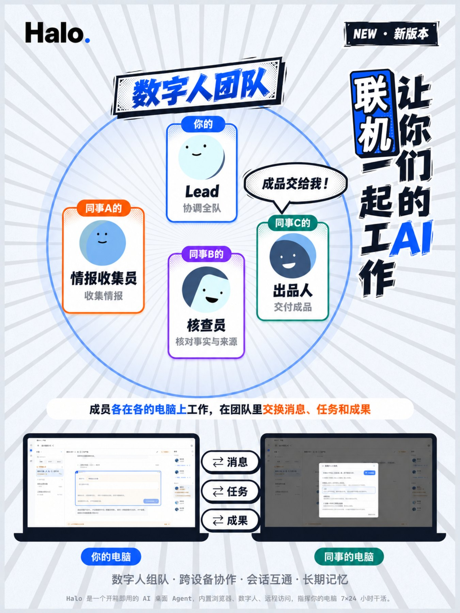
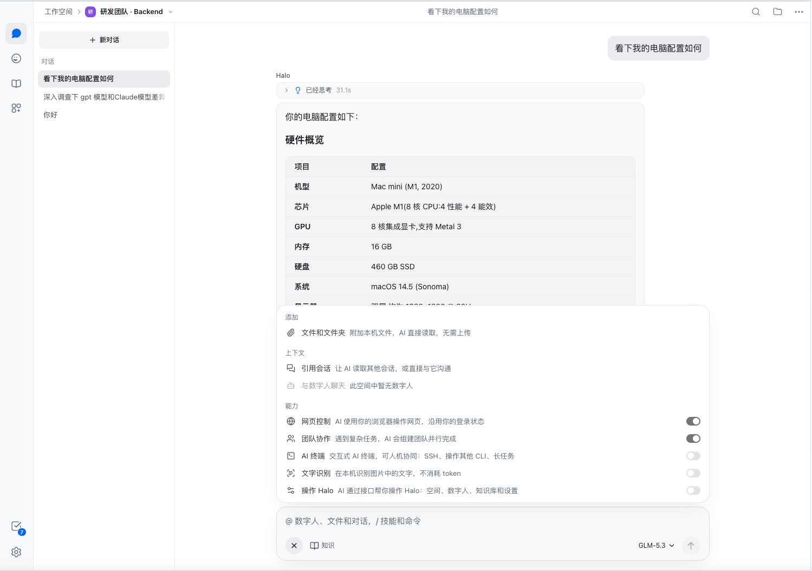
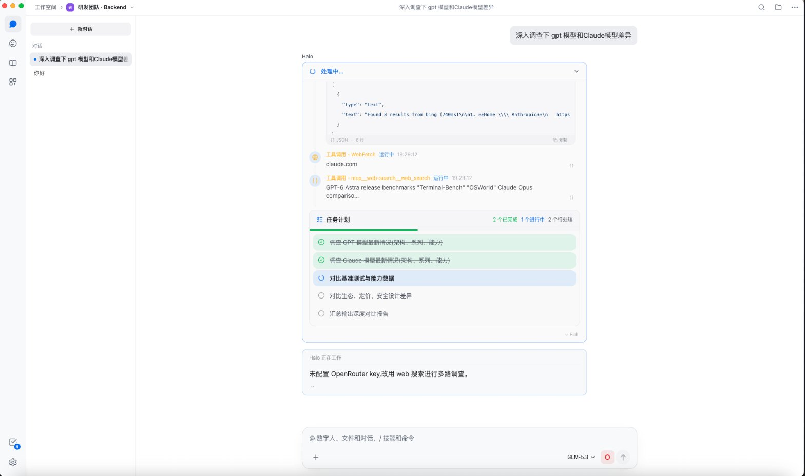
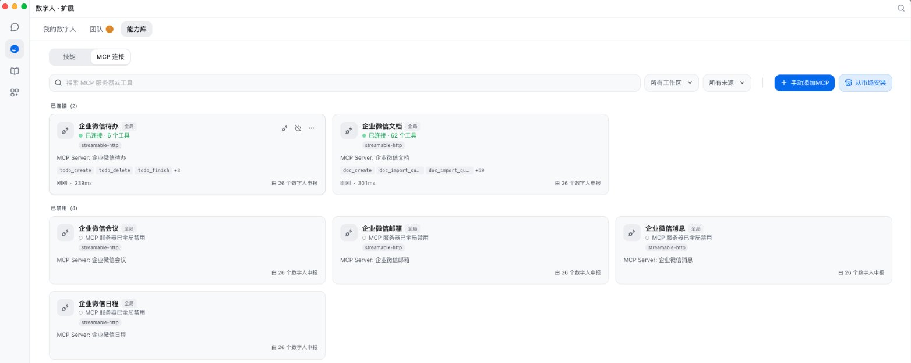
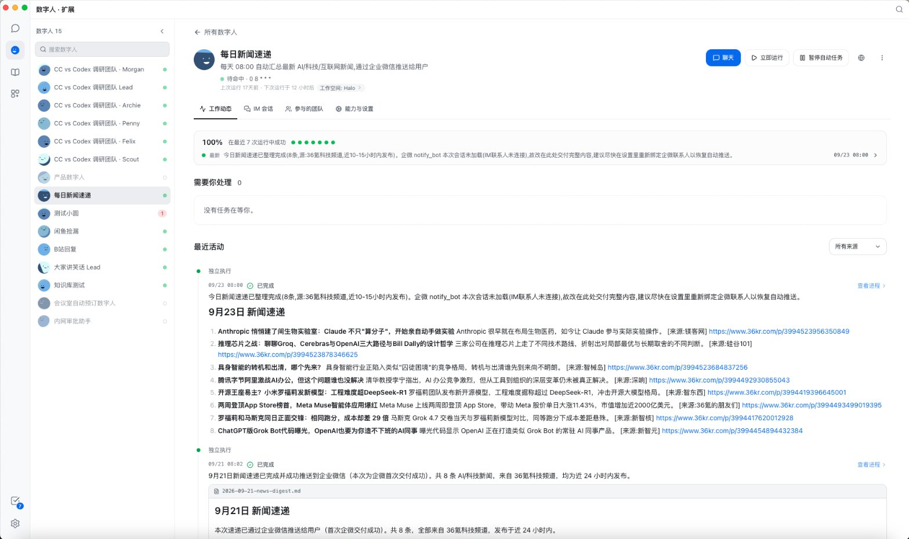
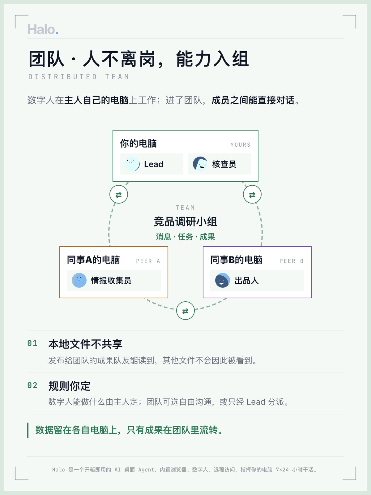
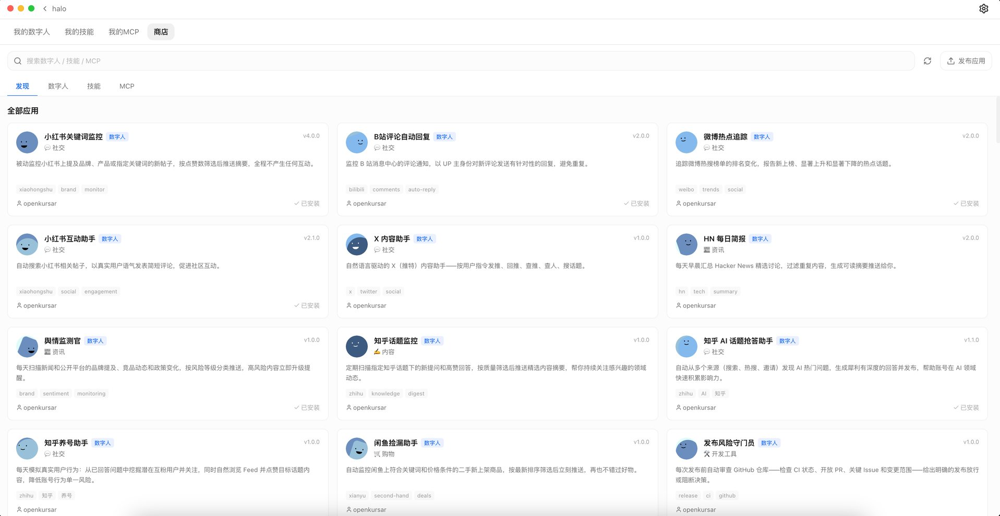

2025 年 10 月，一个简单的困扰：我想用 Claude Code，但整天在开会。如果能用手机遥控家里电脑上的 Claude Code 呢？
第一个版本花了几个小时。之后的一切，几乎全部由 Halo 自己构建。3.0 让数字人组成团队、跨电脑协作——你设定目标，数字人自主推进，你只在关键节点做决策。
Halo 发起人 · @openkursar-flynn
反馈与交流，欢迎加微信 go2halo，备注“Halo”。
Halo 是开源的桌面 AI 工作站。对话、写代码、做文档、查资料，一如既往；更进一步，长期在岗的数字人组成团队，连同事电脑上的数字人一起分工、交接、持续值守。你只负责定方向、做决定。

一支真实运行的数字人团队：Lead 派发任务，成员之间直接对接、交付、验收。
人人都在用 AI，每个人自己的效率确实上去了；可工作之间的衔接还是靠人：把这个 AI 的结论复制给那个 AI，把文件和结论转给同事，同事再对自己的 AI 重讲一遍。人成了最大的瓶颈。
Halo 让 AI 之间直接分工、交接、积累记忆、持续值守，人只负责定方向、做决定。
个人提效是加法，
协作提效是乘法。

你的 Lead 协调全队；同事带着自己的数字人加入，各在各的电脑上工作，在团队里交换消息、任务和成果。
团队状态按多数派选出负责节点、按任期复制日志；负责节点的电脑下线，自动重新选举，不会出现两个负责节点，团队照常运转。
对话、写代码、做文档、查资料。AI 操作真实的浏览器和终端，你在旁边看得见，随时接手或停止。
输入框的“＋”里一键打开网页控制、团队协作、AI 终端、文字识别、操作 Halo；本机文件和文件夹直接附加，不用上传。

复杂的问题，AI 先拆成任务计划，再联网检索、调用工具，一项一项做完；进度和每一步调用都摆在你眼前。

MCP 服务和技能（Skills）一键连接，兼容 Claude Code 的 MCP 与 Skills 生态；企业微信待办、文档等都能直接接进来。

报告、代码、网页、终端、Word / Excel / PDF 在对话旁打开；选中一段、加句批注，AI 就知道你说的是哪里。
可选 Claude Code、Codex、Halo SDK 等引擎；在变更视图审查，再一键快速审查或多角色团队审查。
内置文档技能和运行环境，直接生成、修改 Word、Excel、PPT、PDF，不用先装一堆依赖。
导入的文件聊天时自动引用并标注出处；同一空间的聊天共享分层记忆，换个聊天不用从头介绍。
新开一个会话问“其他几个会话进行得怎样了？”，它会逐个去看、汇总给你；AI 也能替你管理空间、数字人和设置。
任意 Anthropic / OpenAI 兼容 API，或同时登录多个 ChatGPT、Claude、GitHub Copilot 账号，按会话切换模型与思考强度。
一个 AI 包揽所有事，注意力有限；只认识你的 AI，帮不上整个团队。
| 一个 AI 包揽 | 数字人团队 | |
|---|---|---|
| 分工 | 说明和工具挤在一处 | 每个数字人只管一道工序 |
| 出了错 | 不知道哪一步错了 | 哪道工序出错，一眼可查 |
| 交接 | 人来转发，重讲前因后果 | 数字人之间直接提问、交付 |
| 能找谁 | 只认识你 | 还认识同事的数字人 |
按计划或事件自动运行，做完把结果推到你常用的 IM。比如每天 08:00 整理新闻速递，推送到企业微信。

在任意空间对 AI 说“帮我组个团队”，研究、核对、写作各有分工。团队工作台集中展示任务、进展、队友之间的对接和成果。
同事带着自己的数字人加入你的团队，各自在自己的电脑上运行。没有中心服务器，也不用把文件交给谁。

数字人商店里挑一个，填几项配置就开始运行，不用写提示词。企业可以部署私有商店，在设置里添加即可。

远程访问运行在家里或办公室电脑上的 Halo：交办任务、上传材料、下载成果。Android 客户端可直接下载。
在熟悉的聊天窗口里向数字人交办工作，背后可以是一整支团队。
结果直接送到聊天里；需要你拍板的事，回一句，工作就继续往前走。
一句话组队：研究、核对、写作分工。
数字人按工作日定时整理行业或研发动态。
在手机微信里说“把这份方案改一下”。
AI 修改后在变更视图审查，再发起团队审查。
让 AI 生成周报、表格、演示材料。
数字人定时登录 OA、审批、工单系统巡查。
安装商店里现成的 Browser Action 数字人。
Windows 从 3.0 起在后台准备好新版本，点重启即可完成更新。Linux 版暂不包含 AI 终端。iOS 远程客户端可从源码构建。
按上面的系统下载，双击安装。
用 Claude 或 ChatGPT 账号登录，或填入任意 Anthropic / OpenAI 兼容服务的 API Key。
一个项目一个空间，文件和记忆互不干扰。
直接对话交办；或从商店安装数字人、一句话组建团队。
开启远程访问，或绑定飞书 / 微信 / 企业微信。
MIT 开源，运行在你自己的电脑上；文件与工作环境由你掌控，Halo 没有自己的后端服务。
按需选择引擎；自研的 Halo SDK 资源占用低、启动更快，针对开源模型优化。
成员分布在不同电脑上协作，没有中心服务器；团队状态借鉴 Raft：多数派选出负责节点，按任期复制日志，负责节点下线后自动重新选举。
空间隔离、深浅色主题、50%–150% 界面缩放，界面支持 7 种语言。兼容 Claude Code 的 MCP 与 Skills 生态。
2025 年 10 月，一个简单的困扰：我想用 Claude Code，但整天在开会。如果能用手机遥控家里电脑上的 Claude Code 呢？
第一个版本花了几个小时。之后的一切，几乎全部由 Halo 自己构建。3.0 让数字人组成团队、跨电脑协作——你设定目标，数字人自主推进，你只在关键节点做决策。
Halo 发起人 · @openkursar-flynn
反馈与交流，欢迎加微信 go2halo，备注“Halo”。